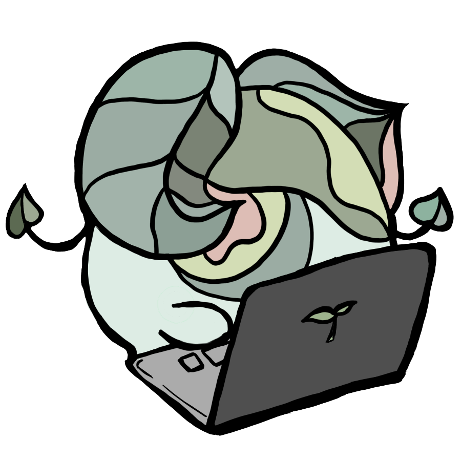
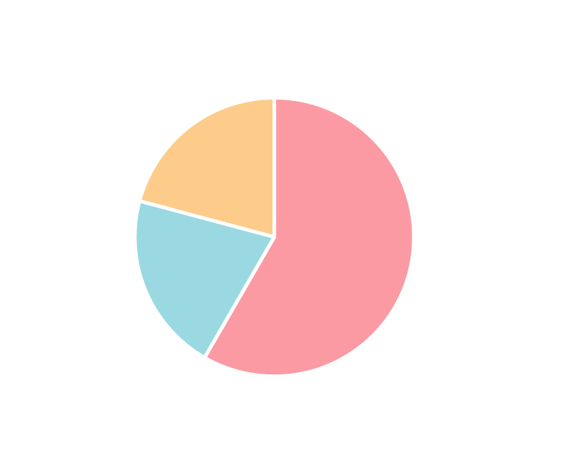

心に寄り添うサプリメント
co2sup
co²supの機能

働くあなたの、心に寄り添う。
働く人の約6割が強いストレスを感じる現代社会。
co²supは、テクノロジーであなたの心に寄り添います。
いつでもどこでも、あなたに寄り添う。
web上で動作するアプリだから、スマホでもパソコンでも、いつでもco²supにアクセスできます。
オフィスで他人の目を気にすることなく、プライバシーを守りながらあなたの心に寄り添います。
あなたの気づかない不調にも寄り添う。
パソコンのカメラを用いて、疲労度を測定。
カメラで顔を認識し、自律神経の状態を把握することで、疲労度を評価します。
メンタルヘルス問題の予防や労働の生産性の向上が見込めます。
毎日の質問で、あなたに寄り添う。
厚生労働省が推奨しているストレスチェック調査を手軽にアプリから受けられます。
毎日のアンケート回答を分析し、月終わりに利用者一人一人に適したストレスケアを提案します。

選べる2つのプラン
Standard
2,700
- webカメラを用いた表情分析
- 月1回のカウンセリングサポート
- データ分析とレポート確認
- 社内全体の心の健康状況サマリー
- チャットによる利用サポート
Premium
4,880
- Standardプランの全機能
- 詳細なサマリーレポート
- 電話・対面による利用サポート
- 月1回のカウンセリングの追加